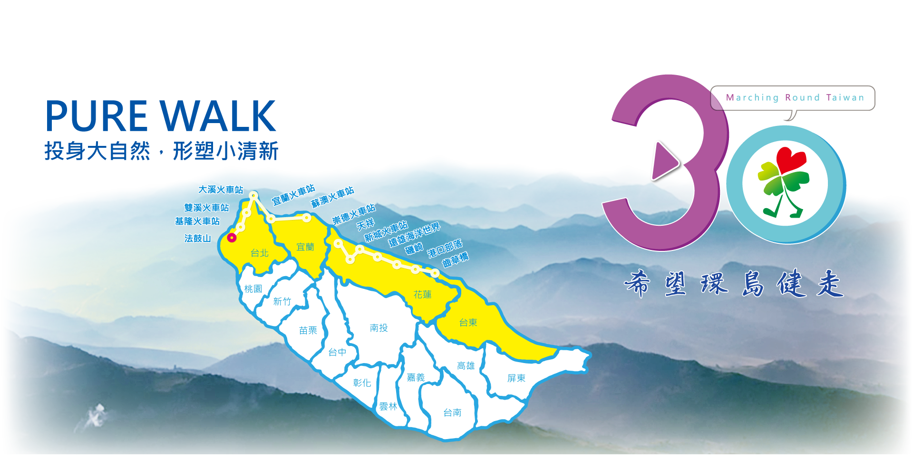
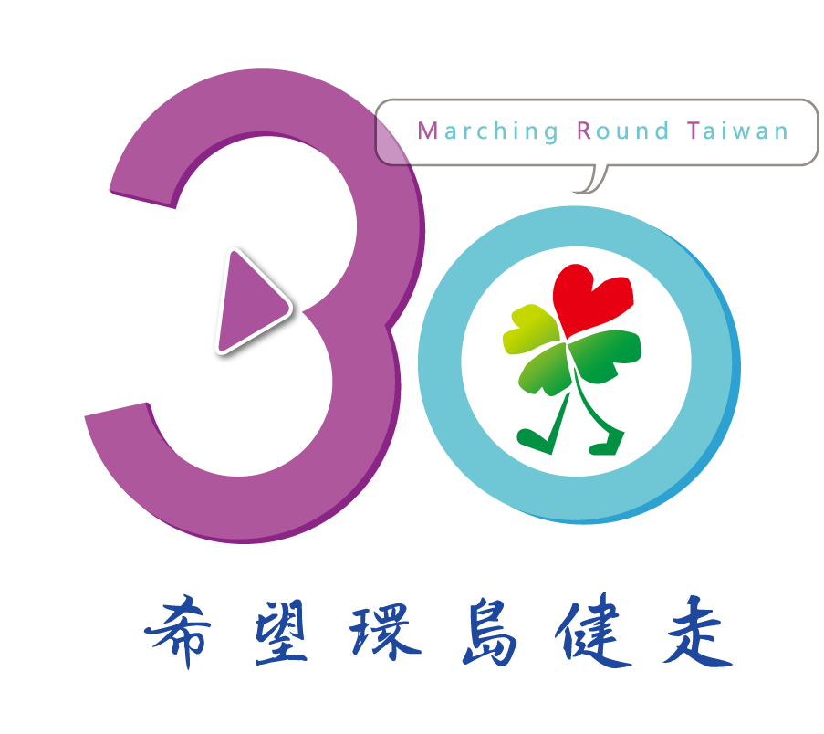

<div class="row banner-top">
  

</div>

<div class="bk3">
    <p class="text-center">2016，希望基金會成立30週年<br/>
我們由聖約翰大學出發，走了30公里到法鼓山<br/> 
MRT，以30為出發點<br/>
MRT，March Round Taiwan
</p> 
    
  </div>

<div class="row hidden-xs">

 
</div>

  <div class="btn-box wow bounceInDown"> 
    <a href=""></a>
    
  </div>

 <div class="btn-box-2" > 
    <a href=""></a>
</div>


<script src="http://cdn.dowebok.com/131/js/wow.min.js"></script>
<script>
if (!(/msie [6|7|8|9]/i.test(navigator.userAgent))){
  new WOW().init();
};
</script>     